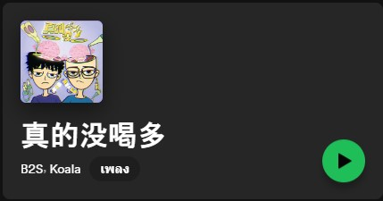
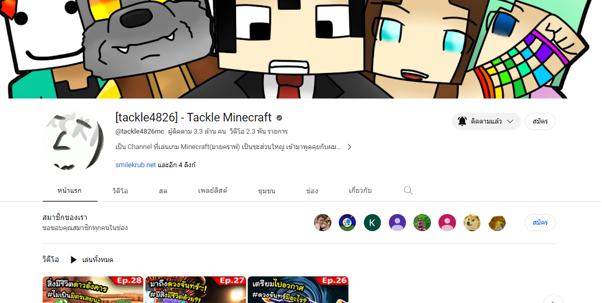
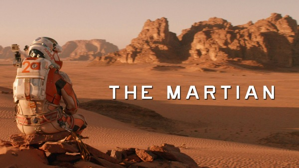
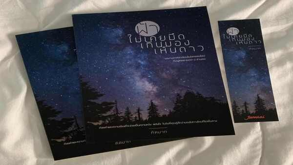

ฟังเพลงไม่ตายตัว ฟังได้ทุกแนว แต่ถ้าฟังบ่อยๆจะเป็นเพลงสากล, C-pop, Rap-hiphop ส่วนใหญ่ก็ฟังเพลงจีน เพลงไทยบ้างแนวเพลงอินดี้, R&B เอาจริงก็ฟังหลายแนวผสมกันไป แล้วแต่ช่วงอารมณ์นั้นๆว่าอยากฟังแนวไหน

สนใจช่อง tackle4826 ขอเรียกว่าช่องพี่เก้อ(เพราะได้ยินจากไหนไม่รู้มีคนเรียกพี่เขา แต่จริงๆพี่เขาชื่อแท็ค) สาเหตุที่สนใจช่องนี้ เริ่มมาจากบังเอิญเจอคลิปวิดีโอที่ลงในเฟสบุ๊ค เลยติดตามดูคลิปอื่นๆในYoutube โดยช่องนี้เป็นข่องที่ลงเกี่ยวกับเกมมายคราฟทั้ง Modpack, Miniworld รวมถึงการอัพเดทเกมเวอร์ชันต่างๆ โดยส่วนตัวชอบเกมมายคราฟอยู่แล้ว แต่ไม่ค่อยได้เล่น เพราะเบื่อง่าย หลังจากเจอช่องของพี่เก้อ พี่เขาเล่นแล้วเรารู้สึกได้เล่นเกมตามไปด้วย ตลก ฮาดี ดูๆไป ผ่อนคลายความเครียดได้ ซึ่งเกมมายคราฟที่พี่เก้อเล่นก็มีหลายซีรี่ย์ให้ติดตาม ซีรี่ย์ที่ชอบที่สุดคงเป็น Monument of Aldrea

ซีรี่ย์/ภาพยนต์ที่สนใจ เริ่มจากซีรี่ย์ ตั้งแต่ขึ้นมัธยมปลายมา แนวซีรี่ย์ที่ดูจะเป็นซีรี่ย์จีนโบราณซะส่วนใหญ่ มีแนวปัจจุบันบ้างแต่ไม่ค่อยอิน และจะดูพากย์จีนมากกว่าพากย์ไทย เพราะรู้สึกว่าเวลาฟังภาษาจีนจะเข้าถึงเนื้อหา และการแสดงของนักแสดงมากกว่าฟังแบบพากย์ไทย ต้องเล่าว่าส่วนตัวไม่ชอบดูซีรี่ย์จีนเลย เพราะได้ยินเสียงพากย์ซีรี่ย์จีนแล้วมันเสียงดังโหวกเหวก ทำให้เป็นภาพจำที่ไม่ชอบ แต่หลังจากได้ดูซีรี่ย์จีนเรื่อง ข้านี่แหละองค์หญิงสาม ทำให้รู้ว่าซีรี่ย์จีนไม่ได้เป็นอย่างที่เคยเห็นเลยเปิดใจลองดูเรื่องใหม่ๆ จนติดถึงปัจจุบัน
ส่วนภาพยนต์จะชอบดูแนว Sci-fi ที่เกี่ยวกับอวกาศ เรียกได้ว่าตามดูเกือบทุกเรื่อง เรื่องที่ชอบน่าจะเป็นเรื่อง Apollo11/13, Firstman, The Martian, Europa Report แนวประมาณสารคดี ดูแล้วทำให้อยากเป็นนักบินอวกาศไม่ก็อยากทำงานในนาซ่า

สืบเนื่องมาจากการดูซีรี่ย์ ยิ่งดูเยอะ ยิ่งฟังเยอะ ทำให้เริ่มสนใจ ภาษาที่สนใจจึงเกิดจากการดูซีรี่ย์ นั่นก็คือ ภาษาจีน ทำให้พอฟังภาษาจีนเข้าใจบ้าง สามารถดูรายการวาไรตี้จีนต่างๆโดยไม่ต้องดูซับได้นิดหน่อย สื่อสารได้นิดหน่อยแต่ไม่ถูกหลักไวยากรณ์เท่าที่ควร ส่วนใหญ่ก็เป็นการสื่อสารที่เป็นภาษาพูด หรือคำแสลงที่มาจากการดูซีรี่ย์ ซึ่งคิดว่าข้อดีของการดูซีรี่ย์คือการได้ฝึกภาษาไปในตัว
สาเหตุที่สนใจหนังสือเล่มนี้ เพราะหนังสือเล่มนี้เป็นหนังสือที่ให้พลังใจในวันที่เรารู้สึกแย่ มืดมนไปทุกทาง ท้อ เหนื่อยหมดแรงอ่อนล้า ซึ่งทำให้มีกำลังใจฮึดสู้ บางครั้งก็ทำให้ปล่อยวางปัญหาเล็กๆน้อยๆลงได้ เหมือนกับมองเห็นแสงสว่างให้กับปัญหาที่ต้องเจออยู่ โดยรวมเป็นหนังสือที่น่าอ่านสำหรับคนที่ต้องการกำลังใจ มองไม่เห็นทางออก หนังสือเล่มนี้ก็เป็นตัวเลือกที่ดีที่น่าอ่านเลย
